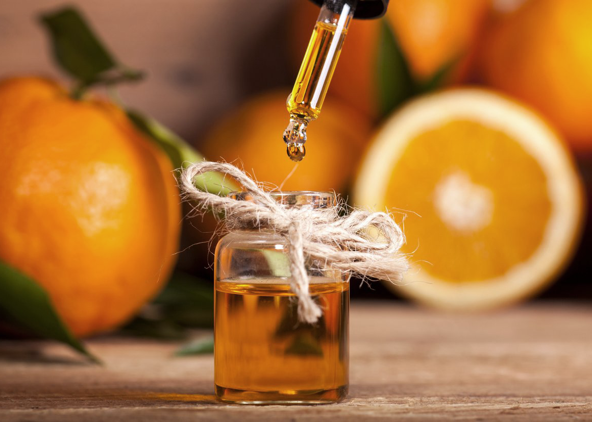
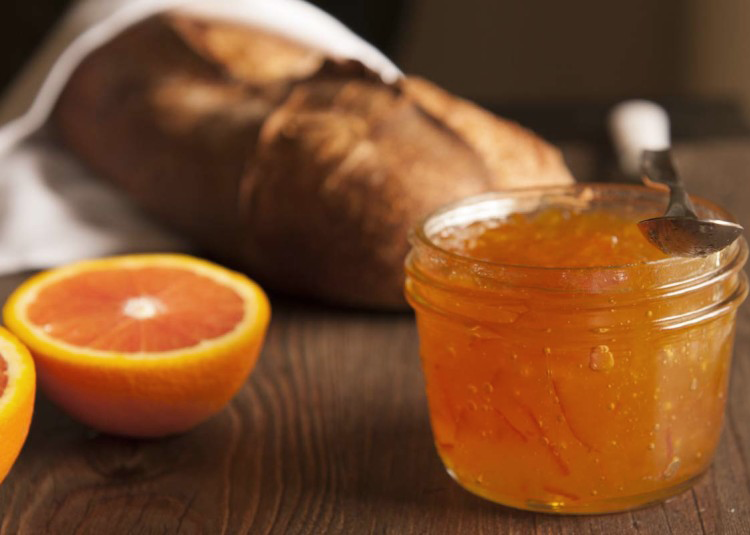

Juice
Orange juice is obtained by squeezing the fruit on a special tool (a juicer or squeezer) and collecting the juice in a tray underneath. This can be made at home or, on a much larger scale, industrially.

Oil
Sweet orange oil is a by-product of the juice industry produced by pressing the peel. It is used for flavoring food and drinks and also in the perfume industry and aromatherapy for its fragrance.

Marmalade
Marmalade preserves are traditionally made with Seville oranges, which are less sweet. All parts of the fruit are used: the pith and pips (separated and placed in a muslin bag) are boiled in a mixture of juice, slivered peel, sliced-up flesh, sugar, and water to extract their pectin, which helps the conserve to set.